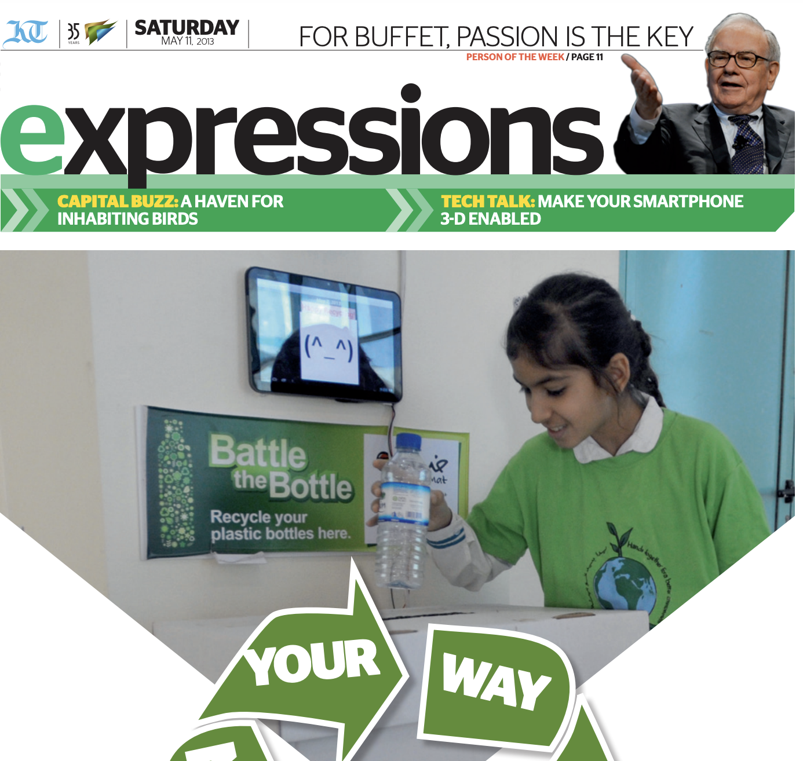

üí° About
I'm an Associate Professor in Computer Science. I research Design Thinking, Data Visualization and HCI. Recently, I have been exploring how AI impacts the engineering and architecture design processes, the carbon foot print of croissants and how with parametric design it can be reduced. In the lab, we also work on how to enhance space suits. Follow the labs insta for pics!
üåê Talks
- Panel on AI and creativity at the Dubai Future Forum (2023 Nov).
- Interview by Chris Richardson for the Pragmatic Institute (2022 March) .
- #EUDataViz 2021 conference by the EU publications Office. Watch the conference on YouTube.
- Design thinking, how to teach it online (2020 Oct 26-28). Ministry of education and Bankia. Trained 60+ high school teachers on how to teach design thinking online.
- PyData Global 2020 short talk (2020). Watch the short talk on YouTube.
- Interview in the Colombian podcast UX Cool cast (2020 May). Listen to the interview on Spotify.
- Interview for the Spanish podcast Presentastico (2020 April). Listen to the interview on Presentastico.
üåç Publications
- M. A. Kuhail, S. S. Mathew, et al., "‘Will I Be Replaced?’ Assessing ChatGPT's Effect on Software Development Jobs," in Science of Computer Programming, p. 103111, 2024.
- D. Drozdzewski, J. O. Berengueres, "Developing QualNotes: A collaborative and cross-disciplinary platform," in Digital Geography and Society, vol. 6, p. 100086, 2024.
- M. A. Kuhail, J. Berengueres, and T. Kuhail, "Haptic systems: Trends and lessons learned for future HCI," in Electronics, vol. 12, no. 8, p. 1888, 2023.
- J. Berengueres, M. AlKuwaiti, and M. Abduljabbar, "Adding Sound Transparency to a Spacesuit..." in IEEE Open Journal of Engineering in Medicine and Biology, 2023.
More in Google Scholar.
Books

A series of books to think better.

Berengueres, J. (2007). The Toyota production system re-contextualized. Lulu. com.
I wrote this book while I was finsihing my PhD in Tokyo.
A free textbook (ibook) to teach design thinking.
More in Books.
üíπ Projects
- Qualnotes is an opensource digital notetaking app that runs on flutter under 50k SLOCS. Developed togehter with github guru Marc Magrans and human geographer Danielle Drozdzewski
- Datasets on Kaggle
- Lean UX workshop
üì£ Featured in the Press
-

Our paper was featured by TheNewScientist J. Berengueres, M. AlKuwaiti, and M. Abduljabbar, "Adding Sound Transparency to a Spacesuit..." in IEEE Open Journal of Engineering in Medicine and Biology, 2023. - 
Our Interactive Recycle bin deployment in a local school was featured in the Khaleej times. Berengueres, J., Alsuwairi, F., Zaki, N., & Ng, T. (2013, March). Gamification of a recycle bin with emoticons. In 2013 8th ACM/IEEE International Conference on Human-Robot Interaction (HRI) (pp. 83-84). IEEE.
CV & Bio
Short bio. Jose is from Barcelona. Received a PhD in bio-inspired robotics from Tokyo Institute of Technology. He works on data visualization, design thinking, ethics for IT, HCI, leadership in IT, and of course AI. He likes coaching entrepreneurs at the university incubator and angel investing. Has taught at business and design schools, and regularly advises to corporations and governments on creativity, analytics and strategy. In 2008, he developed two startups (a visual Twitter and a photo-sharing site). Jose has published several books on creativity such as Introduction to Data Visualization & Storytelling. To pitch an idea for your startup send me a deck on LinkedIn, particularly if it is about #Edtech and LLM+desgin. For workshops and keynotes requests get in touch via email.